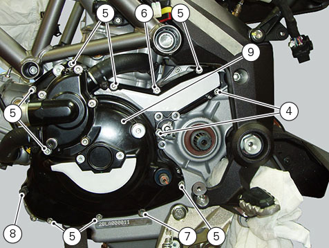

Removal of the generator cover
Remove the oil sump guard (
Removing the oil sump guard
).
Drain the cooling system (
Changing the coolant
).
Remove the sprocket cover (
Removing the front sprocket
).
Drain the engine oil (
Changing engine oil and filter cartridge
).
Remove the clutch slave cylinder (
Removing the clutch slave cylinder
).
Remove the pump-cylinder hoses (
Removing the cylinder/piston assembly
).
Remove the water pump-radiator hose (
Removing the water pump
).
Note
This operation is described for an engine removed from the frame since all reassembly procedures are easier with the engine on the bench.
Disconnect the generator connector from the main wiring (A).
Undo the two retaining screws (1) of the centre cap (2) over the end of the crankshaft and recover the gasket.
Loosen the fixing screws (4), (5), and (6), and stud bolts (7) and (8) on the generator cover (9).

Fix service tool no.
88713.1749
to the holes left vacant by the screws (1) you have just removed.
Turn the tool shaft slowly to separate the cover (9) from the LH crankcase half.
There is a sealing ring (10) on the cover (9) in correspondence with the gearchange lever shaft that may be damaged when removing the generator cover.
Always check the condition of this sealing ring and replace it if damaged.